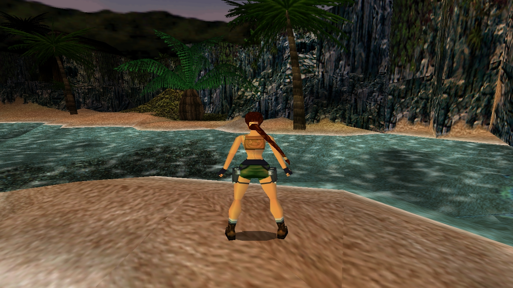
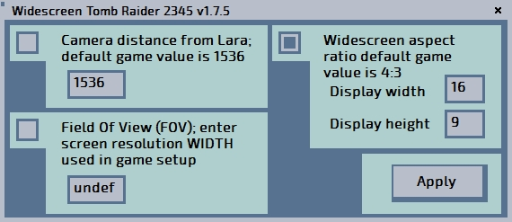
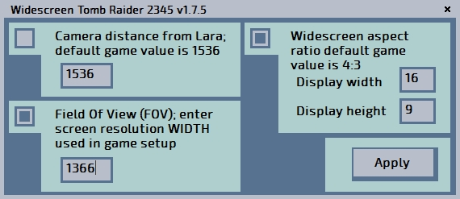
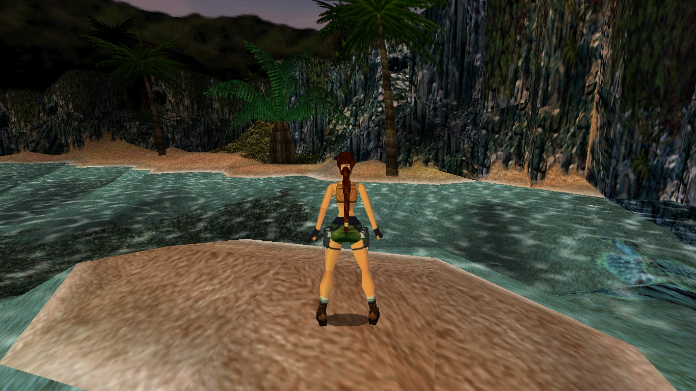
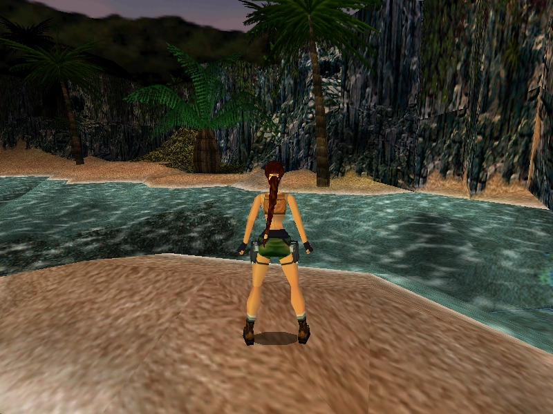
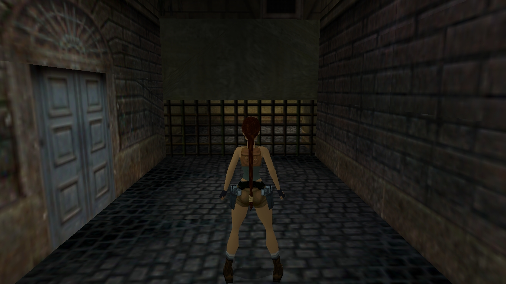
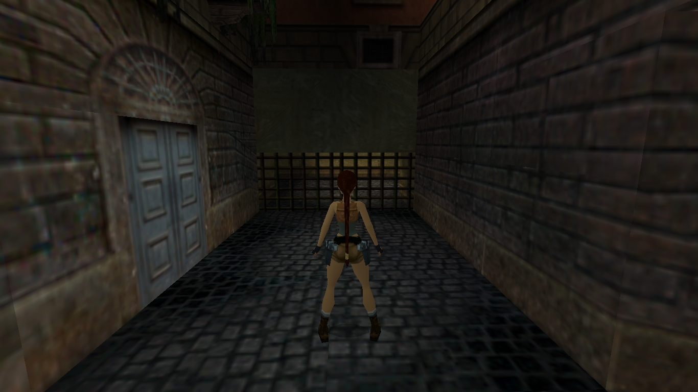
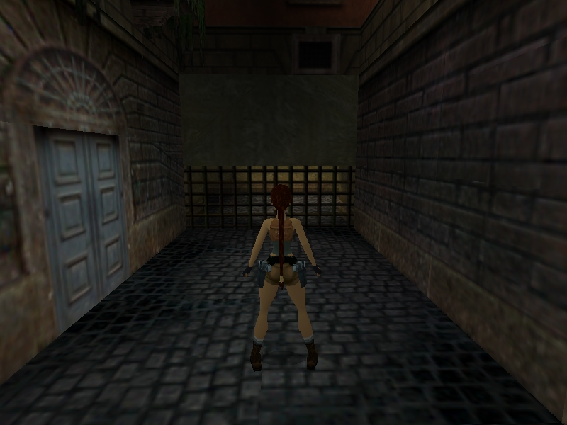
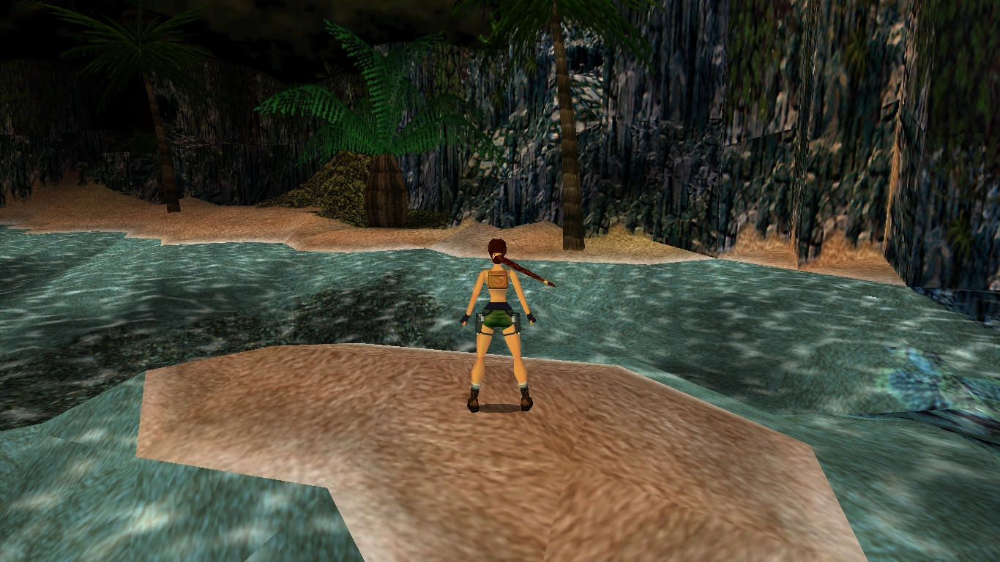

Ed Kurlyak aka black4
Manual Updated 6 Dec. 2021
Patch Updated 25 Oct. 2024
Part 1. Introduction
For Tomb Raider 2,3,4 possible apply Widescreen Fix, FOV fix, Camera Distance Fix.
For Tomb Raider 5 only possible apply FOV Fix and Camera Distance Fix.
Need to say, widescreen patch works only for PC version of Tomb Raider 2,3,4,5 and game was developed for PC monitor with aspect ratio 4:3 before was invented widescreen monitor as 16:9, 16:10 etc. When start Tomb Raider 2,3,4 on modern widescreen monitor you can see image stretched, and lack game screen proper proportions. For fix problem, you can use Old Games Widescreen Patch (simple version of widescreen patch, only widescreen fix), or use Tomb Raider 2345 patch (so called advanced version for apply widescreen fix, field of view fix called FOX fix, and camera from Lara distance fix). If you want use only widescreen game, just try Old Games Widescreen Patch. If you need advanced features (field of view fix, camera distance fix and widescreen fix) try use Tomb Raider 2345 patch. All cases of applying Tomb Raider 2345 patch will shown below (screen shot of patch settings and corresponding outcome image on game screen). After applying widescreen fix (advanced version of patch) you quite can separate start patch again for apply FOV fix, and Camera Distance Fix, or apply this 3 fix as one in same time.
As we know, Tomb Raider 5 has native widescreen aspect ratio. If you run TR5 as usual 800x600 resolution (not widescreen) it possible to see Lara model placed a bit far from viewer. If you run TR5 for example 1366x768 (widescreen resolution) you can see Lara is placed a bit closer to viewer. Same effect possible to see if run Tomb Raider 2,3,4 (they not have native widescreen ratio) after widescreen patching - Lara model a bit closer to viewer after widescreen patching. To correct this, use FOV option during patching, with screen width value, and as result you can see Lara model has distance by analog TR 2,3,4 with 800x600 (not widescreen resolution), what is more usual appearance, came before era widescreen monitors.
On screen shot Image 1 can see screen of Tomb Raider 3 game, used flat widescreen monitor (without applied widescreen patch).
Image 1.Used widescreen resolution 1366x768 without widescreen fix.

Part 2. Widescreen Fix.
After applied Tomb Raider 2345 patch (or Old Games Widescreen Patch) with widescreen option 16:9 (settings shown on screen shot Image 2.1) you can see image of game screen like Image 2.2. You can see image a bit flattened (top and bottom) and more thin in compared with previous Image 1. For example we can not to see sky on top of screen shot (on previous screen shot Image 1 sky there was). Consequently use widescreen patch now we have correct proportions of game screen, but lack of Field Of View, as result less angle of view.
Image 2.1.

Image 2.2 Game setup resolution 1366x768 after widescreen fix.

Part 3. Widescreen fix and FOV fix.
After applied widescreen fix, to correct lack field of view of game screen, and turn your game widescreen to usual look, you can use FOV fix (as shown on this page screen shot settings of patch Image 3.1). On screen shot Image 3.1 you can see we applying widescreen fix 16:9 option, and FOV fix with 1366 value – it’s current resolution width used in Tomb Raider setup for my notebook’s display, and resulted Image 3.2 absolute identical with original not widescreen game screen Image 3.3, we can see sky, Lara distance is original, etc. like in 4:3 usual aspect ratio and resolution 800x600. Additionally in Tomb Raider 5 you can correct game screen, too. For example, Image 3.4 used usual game setup resolution 1366x768, and we can see same lack of Field Of View. It’s possible to correct with FOV fix value 1366 and resulted will screen on Image 3.5. On Image 3.6 shown Lara position with resolution 800x600, i.e. not widescreen resolution. As we can see, Image 3.5 and Image 3.6 have same Lara position on screen.
Image 3.1

Image 3.2 Game setup resolution 1366x768 after widescreen and FOV fix value 1366.

Image 3.3 Not widescreen game setup resolution 800x600

Image 3.4 Tomb Raider 5 Chronicles game setup resolution 1366x768

Image 3.5 Tomb Raider 5 Chronicles game setup resolution 1366x768 after FOV fix value 1366

Image 3.6 Tomb Raider 5 Chronicles game setup resolution 800x600

Part 4. Distance viewer to Lara fix.
As bonus, you can change distance from Lara to viewer, using correspond option. Patch settings on Image 4.1 show distance to Lara model is 3000 points, and result screen shot is Image 4.2.
Image 4.1
Image 4.2. After camera distance fix value 3000
